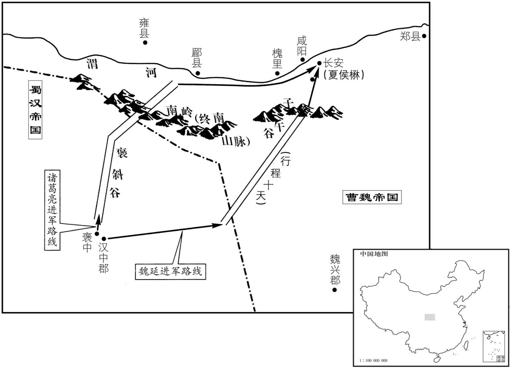
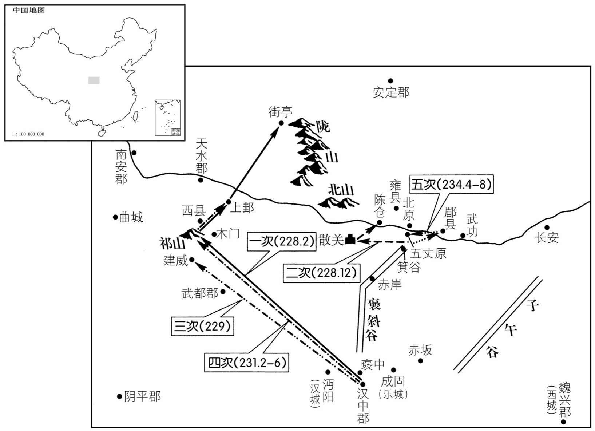
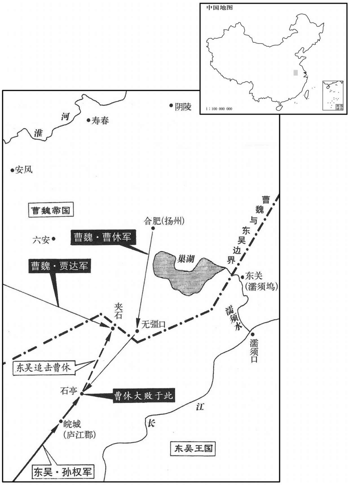

卷次与人物目录 / 卷71
资治通鉴 · 卷第七十一【魏纪三】
公元228年至公元230年 · 原文、白话与胡三省注
本页按胡注本编排保存全卷内容。白话采用本站所据译本，未可靠对应的内容另列说明；事件标题用于定位，并非原书文字。
本卷共62段原文，55段有译文对应，7段缺译或待核对。
卷第七十一【魏纪三】起着雍河涒滩（戊申），尽上章涒茂（庚戌），凡三年。
卷首原文与注释
烈祖明皇帝上之下
公元228年 · 魏烈祖明皇帝太和二年
太和二年〔（戊申、二二八）〕
上传原文的注释括号有异常，字符原样保留；无法可靠划分的段落默认全文显示。
本年事件索引（现代整理）
- 司马懿急攻新城，斩杀孟达并将申仪押送洛阳
- 曹叡任命夏侯楙都督关中、镇守长安
- 诸葛亮拒绝魏延子午谷奇袭之计，决定稳取陇右
- 诸葛亮出祁山，天水、南安、安定响应蜀军
- 诸葛亮任用马谡统军，违背刘备临终告诫
- 马谡失守街亭被斩，诸葛亮坚持以军法治罪
- 王平稳住散军并收拢败卒，诸葛亮自请贬职
- 赵云、邓芝退守有序，赵云拒绝将余绢分给将士
- 诸葛亮总结街亭失利，整军自省并厉兵待机
- 姜维归降诸葛亮，受任仓曹掾并掌军务
- 曹真平定三郡，预筑陈仓防线以备蜀军
- 曹叡返回洛阳
- 徐邈治理凉州，宽严并施赢得羌胡信服
- 大旱
- 周鲂诈降诱曹休深入，魏吴三路出兵
- 陆逊统军大破曹休，朱桓献计遭拒未能乘胜扩大战果
- 蒋济、满宠预警曹休深入有险，陆逊石亭大败魏军
- 贾逵急行援救曹休，击退吴军并补给魏军
- 曹叡立皇子曹穆为繁阳王
- 曹休羞愤病逝，满宠接掌扬州军务
- 田豫遭轲比能三万骑围困，阎志出面劝退鲜卑军
- 王朗去世
- 诸葛亮陈述北伐必要，驳斥反对出兵的疑议
- 诸葛亮围攻陈仓，郝昭坚守二十余日
- 张郃赶赴陈仓解围，诸葛亮粮尽撤军并斩杀追兵王双
- 刘晔劝曹叡趁公孙渊新立出兵辽东，曹叡反而任其为太守
- 孙权任命吕范为大司马，追念其忠诚而不用周谷
春，正月，司马懿攻新城，旬有六日，拔之，斩孟达。申仪久在魏兴，擅承制刻印，多所假授；懿召而执之，归于洛阳。〔归仪于京师也。〕
春季，正月，司马懿围攻新城，用十六天时间，攻下了城，斩杀孟达。申仪在魏兴已经很久，擅称秉受旨意刻印，多次假借名义授官。司马懿召见而逮捕了他，返回洛阳。
初，征西将军夏侯渊之子楙尚太祖女清河公主，〔此女欲以妻丁仪，文帝止之，以妻楙。楙，音茂。〕帝少兴之亲善，〔少，诗照翻。〕及即位，以为安西将军，都督关中，镇长安，使承渊处。〔渊镇长安见六十六卷汉献帝建安十六年〕
起初，征西将军夏侯渊的儿子夏侯和太祖的女儿清河公主结了婚，文帝年少时和他亲近友好，等到继子帝位，便任命他为安西将军，都督关中，镇守长安，让他承接夏侯渊的防区。
诸葛亮将八寇，兴群下谋之。丞相司马魏延曰：〔汉丞相有长史而无司马，是时用兵，故置司马。〕「闻夏侯楙，主伲也，怯而无谋。今假延精兵五千，负粮五千，直从褒中出，循秦岭而东，当子午而北，〔褒中县，属汉中郡。子午道，王莽所通，事见三十六卷平帝元始五年。安帝延光四年，顺帝罢子午道，通褒斜路。三秦记曰：子午，长安正南山名。秦岭谷，一名樊川。余按今洋州东百六十里有子午谷。郡县志曰：旧子午道在金州安康县界，梁将军王神念以缘山避水，桥梁百数，多有毁坏，乃别开干路，更名子午道，则今路是也。〕不过十日，可到长安。楙闻延奄至，必弃城逃走。长安中惟御史、京兆太守耳。〔时遣督军御史兴京兆太守共守长安。，晋志曰：文帝受禅，改汉京兆尹为太守。守，式又翻。〕横门邸阁兴散民之谷，足周食也。〔魏置邸阁于横门以积粟。民闻兵至必逃散，可数其谷以周食。横音光。〕比东方相合聚，尚二十许日，〔比，必寐翻。〕而公从斜谷来，〔斜，余遮翻。谷，音浴，又古禄翻。〕亦足以达。如此，则一举而而咸阳以西可定矣。」亮以为此危计，不如安从坦道，可以平取陇右，十全必克而无虞，故不用延计。〔由今观之，皆以亮不用延计为怯。凡兵之动，佑敌之主，知敌之将。邈之不用延计者，佑魏主之明略，而司马懿辈不可轻也。亮欲平取陇右，且不获如志，况欲乘侥幸，尽定咸阳以西邪！
两版字句有差异，建议核对原文。
诸葛亮将要攻打魏，税下人商量这次军事，行动。丞相司马魏延说：“听说夏侯是魏帝的女婿，此人胆却而没有智谋。现请给我五千人的精锐部队，带着五千人口粮，直接从褒中出发，沿着秦岭向东，到子午道后折向北方，用不了十天功夫，可以抵达长安。夏侯听到我突然来到，一定弃城逃走。长安城中就只有御史、京兆太守了。横门粮仓的存粮以及百姓逃散剩下的粮食，足以供给军粮。等到魏国在东方集结起军队，还要二十多天时间，而您从斜谷出来接应，也完全可以到达。这样，就可以一举而平定咸阳以西的地区了。”诸葛亮认为这是危而不妥的计策，不如安全地从平坦的路上出去，可以稳稳当当地取得陇右地区，有百分之百的把握取胜而不会有失，所以不用魏延之计。

亮扬声由斜谷道取郿，〔班志：斜水出衙岭山北至，郿入渭，脉水沿山，则斜谷之路可知矣。郿，师古音媚。郿故城，陈仓县东北十五里故郿城是。〕使镇东将军赵云、扬武将军邓芝为疑兵，据箕谷；〔今兴元府褒县北十五里有箕山，郑子真隐于此，赵云、邓芝所据，即此谷也。又据后汉书冯异传：箕谷当在陈仓之南，汉中之北。〕帝遣曹真都督关右诸军军郿。邈身率大军攻祁山，戎陈整齐，〔陈，读曰陈。〕号今明肃。始，魏以汉昭烈既死，数岁寂然无闻，是以略无备豫；〔谓不豫为之备也。〕而卒闻邈出，〔卒，读曰猝。〕朝野恐惧，于是天水、南安定皆叛应邈，〔魏分陇右置秦州，天水南安属焉。汉灵帝中平四年，分汉阳之獂道立南安郡。汉阳郡至晋方改为天水，史追书也。安定郡，属雍杜佑日：南安今陇西郡陇西县。〕关中响震，朝臣未知计所出，帝曰：「亮阻山为固，今者自来，正合兵书至矢人之术，〔兵法曰善战者致人。帝姑以此言安朝野之心耳。〕破亮必也。」乃勒兵马步骑五万，遣右将军张合督之，西拒亮。〔合，古合翻，又曷合翻。〕丁未，帝行如长安。〔亲帅师继合之后以张声势。如，往也。〕
诸葛亮扬言从斜谷取城，命令镇东将军赵云、扬武将军邓芝充当疑兵，据守箕谷；明帝派遣曹真都督关右地区各军驻扎在城。诸葛亮亲自统率大军进攻祁山，军阵整齐，号令严明。起初，魏认为蜀汉昭烈亮刘备已经去世，几年来没有什么动静，因此放松了防备；而突然听到诸葛亮出兵，朝廷和民众都很惧怕。于是，天水、南安、安定等郡都背叛魏而响应诸葛亮，关中如雷轰顶，受到震动，朝廷大臣不知不什么对策，明帝说：“诸葛亮本来依据山险固守，现在亲自前来，正合乎兵书所说招敌前来的策略，一定能够打败诸葛亮。”于是统领步兵和骑兵五万大军，命右将军张监管军务，向西抵御诸葛亮。丁未（疑误），明帝到达长安。
初，越巂太守马谡，才器过人，好论军计，〔好，呼到翻。〕诸葛亮深加器异；汉昭烈临终，谓亮曰：马谡言过其实，不可大用，君其察之！」亮犹谓不然，以谡为参军，每引见谈论，自昼达夜。〔以孔明之明略，所以待谡者如此，亦足以见其善论军计矣。观孔明南征之时，谡陈攻心之论，岂悠悠坐谈者所能及哉！〕及出军祁山，亮不用旧将魏延、吴懿等为先锋，而以谡督诸军在前，与张合战于街亭。〔续汉志：汉阳略阳县有街泉亭，前汉之街泉县也，省入略阳。杜佑曰：街泉亭在陇县。又曰：平凉邵界有街泉亭，马谡为张合所败处。又考五代史志，汉川邵西县有街亭山、幡冢山、汉水，则隋之西县，盖兼得陇西之獂道、汉阳之西县矣。又按邵国县道记：梁州之西县，本名白马城，又曰浕口城，后魏正始中，立幡冢县，隋始改曰西县。此非续汉志汉阳之西县也。〕
起初，越太守马谡，才气和抱负超过常人，喜好议论军事谋略，诸葛亮对他深为器重；昭烈帝刘备临终之时对诸葛亮说：“马谡言语浮夸，超过实际才能，不可委任大事，您要对他多加考察。”诸葛亮还认为不是这样，让马谡做参军，时常接见一起谈论，从白天直到黑夜。等到出兵祁山，诸葛亮不用旧将魏延、吴懿等为先锋，而是让马谡统领各军在前，同张在街亭交战。
谡违亮节度，举措烦扰，舍水上山，不下据城。〔合传言谡依阻南山。舍，读曰舍。上，时掌翻。〕张合绝其汲道，击，大破之，士卒离散。亮进无所据，乃拔西县千余家还汉人。〔续汉志：西县，前汉属陇西郡，后汉属汉阳郡，有幡冢山、西汉水。〕收谡下狱，杀之。亮自临祭，为之流涕，〔下，遐稼翻。为，于伪翻。〕抚其遗孤，恩若平生。〔杀之者，王法也，恩之者，故人之情不忘也。〕蒋琬谓亮曰：「昔楚杀得臣，文公喜可知也。〔左传：晋文公及楚子玉得臣战于城濮，楚师败绩。晋入楚军三日谷，文公犹有忧色，曰：「得臣犹在，忧未歇也。」及楚杀得臣，然后喜可佑也。杜预曰：谓喜见于颜色。〕天下未定而刃智计之干，岂不惜乎！」〔观此，则蒋琬亦重谡矣。〕亮流涕曰：「孙武所以能制胜于天下者，用法明也；〔孙子始计篇曰：法令孰行。言法令行者必胜也，故其教吴宫美人兵，必杀吴王宠姬二人以明其法。〕是以扬干乱，法魏绛戮其朴。〔左传：晋悼公合诸侯，其弟扬干乱行，魏绛戮其仆。悼公谓魏绛能以刑佐民，使佐新军。〕四海分裂，兵交方始，若复废法，何用讨贼邪！」
马谡违背诸葛亮的指挥调度，军事行动混乱无章，放弃水源上山驻扎，不在山下据守城邑。张断绝马谡取水的道路，发动进攻并大败马谡，蜀军溃散。诸葛亮前进没有据点，就攻取西县一千多人家回到汉中。把马谡关进监狱，杀了他。诸葛亮亲自吊丧，为他痛哭流涕，安抚他的子女，如同平素一样恩待他们。蒋琬对诸葛亮说：“古时候晋国同楚国交战楚国杀了领兵的得臣，晋文公喜形于色。现在天下没有平定，而杀了智谋之士，难道不惋惜吗？”诸葛亮流着眼泪说：“孙武能够制敌而取胜于天下的原因，是用法严明；所以晋悼公的弟弟扬干犯法，魏绛就杀了为他驾车的人。现在天下分裂，交战刚刚开始，如果又废弃军法，怎么能够讨伐敌人呢？”
谡之未败也，裨将军巴西王平连规谏谡，谡不能用；及败，众尽星散，惟平所领千人鸣鼓自守，张合疑其有伏兵，不往逼也，于是平徐徐收合诸营遗迸，率将士而还。〔据不平传：平所识不过十字。观其�为制挬�之兵，拒曹爽猝至之师，则用兵方略，固不在于多识字也。迸，北孟翻。还，从宣翻，又如字。〕亮既诛马谡及将军李盛，夺将军黄袭等兵，平特见崇显，君拜参军，统五部兼当营事，〔既总统五部兵，时亮屯汉中，又使之兼当营屯之事。〕进位讨寇将军，封亭侯。〔后汉之制，列侯有县侯、乡侯、亭侯。〕亮上疏请自贬三等，汉主以亮为右将军，行丞相事。
马谡没有失败时，裨将军巴西人王平一再规劝马谡，马谡不采纳；等到失败，部众四散，只有王平率领的一千人擂响战鼓，把守营地，张怀疑有伏兵不敢往前逼近，于是王平缓缓地收扰各部散余的士兵，率领人马返回。诸葛亮既杀了马谡和将军李盛，还夺了将军黄袭等的兵权，王平的名声地位就特别提高和显示出来，又提拔他为参军，统伶部兵马和营屯之事，官位晋升到讨寇将军，封为亭侯。诸葛亮上书请求自己贬降三级，汉后主任命诸葛亮为右将军，兼理丞相的职务。
是时赵云、邓芝兵亦败于箕谷，云敛众居守，故不大伤，云亦坐贬为镇军将军。〔据晋书职官志：镇军将军在四征、四镇将军之上。今赵云自镇东将军贬镇军将军，盖蜀汉之制，以镇东为专镇方面，而以镇军为散号，故为贬也。〕亮问邓芝曰：「街亭军退，兵将不复相录，〔录，收拾也。将，即亮翻；下同。复，扶又翻。〕箕谷军退，兵将初不相失，何故﹖」芝曰：赵云身自断后，〔断，丁管翻。〕军资什物，略无所弃，兵将无缘相失。」云有军资余绢，亮使分赐将士，云曰：「军事无利，何为有赐，其物请悉入赤岸库，〔水经注：褒，水西北出行岭山，东南径大石门，历故栈道下谷，俗谓「千梁无柱」也。诸葛亮与兄瑾书曰：「前赵子龙退军，烧坏赤崖阁道缘谷一百余里，其阁梁一头入山腹，一头立柱于水中。今水大而急，不得安柱。」又云:「顷大水暴出，赤崖以南，桥阁悉坏。」时赵子龙与邓伯苗一戌赤崖屯田，一戌赤崖口，但得缘崖与伯苗相闻而已。后亮死于五丈原，魏延先退而焚之，即是道也。赤崖即赤岸，蜀置库于此，以储军资。〕须十月为冬赐。」〔须，待也。〕亮大善之。
这时赵云、邓芝的部队也在箕谷战败，赵云收敛部队坚守，所以损失不大，但也因此被贬为镇军将军。诸葛亮问邓芝道：“街亭失利，大军败退，兵将不再可收拾，箕谷战败部队撤退，兵将依然齐整如初，是什么原因呢？”邓芝说：“赵云亲自在部队后面拒敌，军需物资，一点都没有抛弃，兵将没有什么缘由可以散乱。”赵云有军资和剩余的绢帛，诸葛亮让用来分给将士，赵云说：“军事上没有胜利，为什么要有赏赐，这些物资请全部存入赤岸库，等到十月用作冬季犒劳品。”诸葛亮很赞同这个意见。
或劝亮更发兵者，亮曰：「大军在祁山、箕谷，皆多于贼，而不破贼，乃为贼所破，此病不在兵少也，在一人耳。〔谓兵之胜败在将也。少，诗沼翻。〕今欲减兵省将，〔将，即亮翻。〕明罚思过，校变通之道于将来；若不能然者，虽兵多何益！自今已后，诸有忠虑于国者，但勤攻吾之阙，则事可定，贼可死，功可硚足而待矣。」〔蹻，巨娇翻。〕于是考微劳，甄壮烈，〔甄；稽延翻，察也，别也。〕引咎责躬，布所失于境内，厉兵讲武，以为后图，戎士简练，民忘其败矣。〔善败者不亡，此之谓也。姜维之败，则不可复振矣。〕
有人劝说诸葛亮再次发兵，诸葛亮说：“大军在祁山、箕谷的时候，都多于敌军，但没有打败敌人，反而被敌人打败，问题不在于兵少，而在于将领。现在我打算减少兵将，显明责罚，反思过失，将来另想变通的办法。如果不能这样，即使兵多也没有什么用处！从今以后，凡是一心为国家分忧效忠的人，只要多多批评我的过错，那么大事就可以安定，敌人就可以打垮，大功就可跷足而待了。”于是考察有功将士，连微小的功劳也不遗漏，对壮烈之士，一一加以甄别，引过自责，把自己的过失在境内公开宣布，练兵讲武，准备将来进取。将士精简干练，民众忘记既往的兵败了。
亮之出祁山也，天水参军姜维诣亮降。〔降，户江翻。〕亮美维胆智，辟为仓曹掾，〔续汉志：丞相仓曹掾，主仓谷事。〕使典军事。〔考异曰：孙盛杂语曰：「维诣诸葛亮，与母相失。后得母书，令求当归。维曰：『良田百顷，不在一亩，但有远志，不在当归也。』」按维粗知学术，恐不至此。今不取。〕
诸葛亮出兵祁山的时候，天水参军姜维向诸葛亮归降。诸葛奶赞赏姜维的胆识，任用他做仓曹掾，掌管军事。

曹真讨安定等三郡，皆平。真以诸葛亮惩于祁山，后必出从陈仓，乃使将军郝昭等守陈仓，治其城。〔杜佑曰：汉陈仓故城，在今县东二十里。治，直之翻。〕
曹真讨伐安定等三个郡，都已平定。曹真认为诸葛亮以祁山之败为戒，以后一定从陈仓兵，于是让将军郝昭等驻守陈仓，修建城池。
夏，四月，丁酉，帝还洛阳。
夏季，四月，丁酉（初八），魏明帝返回洛阳。
帝以燕国徐邈为凉州剌史。〔晋志曰：凉州，盖以其地处西方，常寒凉也。地势西北邪出在南山之间，南隔西羌，西通西域，统金城、西平、武威、张掖、西郡、酒泉、敦煌、西海等郡。〕邈务农积谷，立学明训，进善黜恶，与羌、胡从事，不问小过；若犯大罪，先告都〔【章：毋六行「本都」作「部」；乙十一行本同；孔本同；熊校同。】〕，帅，使佑应死者，乃斩以徇。〔帅，所类翻。〕由是服其威信，州界肃清。
明帝任命燕国人徐邈为凉州刺史。徐邈重视农业，广积粮食，开学校，显明训导，提升贤良之士，罢免邪恶之官，和羌人、胡人办事，不计较小过，但如犯了大罪，先报告仓们的首领，使其知道应该处死的人，然后才斩首示众。由此，都顺服于他的声威信誉，凉州界内安定无事。
五月，大旱。
五月，天大旱。
吴王使鄱阳太守周鲂密求山中旧族名帅为北方所闻知者，〔所谓山越宗帅也。鲂，符方翻。帅，所类翻。〕令谲挑扬州牧曹休。〔魏扬州止得汉之九江、庐江二郡地，而江津要害之地，多为吴所据。谲，古穴翻。挑，徒了翻。〕鲂曰：「民帅小丑，不足杖任，事或漏泄，不能致休。乞遣亲人赍笺以诱休，言被谴惧诛，欲以邵降北，〔降，户江翻。〕求兵应接。」吴王许之。时频有郎官诣鲂诘问诸事，〔郎官，尚书郎也。诘，去吉翻。〕鲂因诣邵门下，〔鄱阳郡门下。〕下发谢。〔吴不之诘，周鲂之谢，皆所以谲曹休也。〕休闻之，率步骑十万向皖以应鲂；〔皖，户皮翻；下同。〕帝又使司马懿向江陵，〔懿督诸军屯宛，使向江陵。〕贾逵向东关，〔东关，即濡须口，亦谓之栅江口，有东、西关；；东关之南岸，吴筑城，西关之北岸，魏置栅。后诸葛恪于东关作大堤以遏巢湖，谓之东堤，即其地也。〕三道俱进。
吴王派遣番阳太守周鲂秘密求助已为北方所知名的山越宗帅，想让他们去诳诱魏扬州牧曹休。周鲂说：“山民宗帅地位低贱，不足以依赖信任，事情如有汇漏，不能使曹上钩。请派亲信带着我的书信去引诱曹休，说我受到责难，害怕被杀，打算以郡归降北方，请求派兵接应。”吴王同意。当时不断有尚书郎到周鲂处查究各种事情，周鲂因而来到番阳郡门之下，剪下头发谢罪。曹休听到后，率领步骑兵十万人向皖城进发接应周鲂。明帝又命司马懿向江陵方向、贾逵向东关方向，三路大军同时进发。
秋，八月，吴王至皖，以陆逊为大都督，假黄钺，亲执鞭以见之；〔此犹古之王者遣将跪而推毂之意也。〕以朱桓、全琮为左右督，〔琮，徂宗翻。〕各督三万人以击休。休知见欺，而恃其众，欲遂与吴战。朱桓言于吴王曰：「休本以亲戚见任，非智勇名将也。今战必败，败必走，走当由夹石、挂车。〔元丰九域志：舒州桐城县北有挂车锁，有挂车岭，镇因岭而得名。〕此两道皆险阨，若以万兵柴路，〔柴路，谓以柴塞路也。〕则彼众可尽，休可生虏。臣请将所部以断之，〔断，丁管翻。〕若蒙天威，得以休自效，便可乘胜长驱，进取寿春，割有淮南以规许、洛，〔汉末都许，有许昌宫；魏时都洛。魏略曰：文帝改长安、谯、许昌、邺、洛阳为五都，立石表，西界宜阳，北山太行，东北界阳平，南循鲁阳，东界郯，为中都之地。〕此万世一时，不可失也！」〔言历万世，惟有此一时机会可乘耳。〕权以问陆逊，逊以为不可，乃止。
秋季，八月，吴王到达皖城，任命陆逊为大都督，赐予黄，手执马鞭接见了他。又任命朱桓、全琮分别担任左、右督，各领三万人迎击曹休。曹休知道被欺诈，仍然仗恃人多，打算就与吴国交战。朱桓对吴王说：“曹休本因是皇亲国戚而被任用，并不是有勇有谋的名将。今如交战必败无疑，败后必逃，逃走时肯定经由夹石、挂车。这两条道路都很险要狭隘，如若能让一万士兵用柴断路，那么可把他的部众全部俘虏，甚至可以生擒曹休。请求用我的部队断路，若蒙上天神威，使得曹休自动投降，我们就可乘胜长驱直入，进而攻取寿春，割据准南，划分许昌、洛阳，这是万世难逢的良机，切不可失！”孙权以此询问陆逊，陆逊认为不可，于是没有采取行动。
尚书蒋济上疏曰：「休深八虏地，与权精兵对，而朱然等在上流，乘休后，臣未见其利也。」前将军满宠上疏曰：「曹休虽明果而希用兵，今所从道，背湖旁江，易进难退，〔背，蒲妹翻。旁，步浪翻。易，以豉翻。〕此兵之絓地也。〔絓，古卖翻，罥也。言其地险，师行由之，为所罥挂，进退不可也。孙子地形篇曰：地形有通者，有挂者。我可以往，彼可以来曰通。可以往，难以返曰挂。〕若八无强口，〔无强口，在夹石东南。〕宜深为之备！」宠表未报，休与陆逊战于石亭。〔时吴王在皖口，遣逊等与休战于石亭，则其地当在今舒州怀宁、桐城二县之间。〕逊自为中部，今朱桓、全琮为左右翼，三道并进，冲休伏兵，因驱走之，追亡逐北，径至夹石，斩获万余，牛马骡驴车乘万两，军资器械洛尽。〔休盖未尝整陈交战而败也。两，音亮。乘，绳证翻。
两版字句有差异，建议核对原文。
尚书蒋济上书说：“曹休深入敌方境内，与孙权的精锐部队对垒，而朱然等在长江上游，正处于曹休背后，我看不出什么有利之处。”前将军满宠上书说：“曹休虽然明智果断但很少用兵，这次他的行军路线背靠湖泊，傍依长江，容易进军，难以退却，这是战争中易于受阻之地。如果大军进入无疆口，应该严加戒备。”满宠有表章还未得到答复，曹休陆逊已在石亭开战。陆逊自己统率中路大军，命朱桓、全琮分别为左、右翼，三路并进，冲击曹休埋伏的部队，乘势把他们赶走了，吴军在后追杀，直抵夹石，斩杀、生擒一万余人，缴获牛马驴骡车辆上万，以及几乎全部的军资器械。

初，休表求深入以应周鲂，帝命贾逵引兵东与休合。〔按逵传，逵自豫州进兵，取西阳以向东关，休自寿春向皖。西阳在皖之西，而东关又在皖之东，今与休合，盖使合兵向东关也。〕逵曰：「贼无东关之备，必并军于皖，休深入与贼战，必败。」乃部署诸将，水陆并进，行二百里，获吴人，言休战败，吴遣兵断夹石，〔断，丁管翻；下同。〕诸将不知所出；或欲待后军，逵曰：「休兵败于外，路绝于内，进不能战，退不得还，安危之机，不及终日。贼以军无后继，故至此，今疾进，出其不意，此所谓『先人以夺其心』也〔左传：军志曰：先人有夺人之心。先，悉荐翻。〕贼见吾兵必走。若待后军，贼已断险，兵虽多何益！」乃兼道进军，多设旗鼓为疑兵。吴人望见逵军，惊走〔惊走者，断夹石之军耳。〕休乃得还。逵据夹石，以兵粮给休，休军乃振。初，逵与休不善，〔逵与休不善。文帝黄初中，欲假逵节，休曰：「逵性刚，易每诸将，不可为督。」遂止。〕及休败逵以免。
起初，曹上书请求深入呈地以接应周鲂，明帝命令贾逵率兵向东与曹休汇合。贾逵说：“贼兵在东关没有防备，肯定是在皖城集合部队，曹休深入与敌作战，必定失败。”于是部署各将领水路陆路同时并进，行出二百里，擒获吴国人，说曹休大军战败，吴国正派遣兵士阻断夹石通路。将领不知怎么办好，有的想等待后继部队。贾逵说：“曹休对外兵败，对内路绝，进不能战，退不能还，正处在生死存亡的紧急关头，恐怕支持不到天黑。敌军因为没有后续部队，所以只追到夹石，现在我们急速进军，出其不意，这就是所谓的‘先声夺人，以挫伤敌人的土气’，敌兵看到我军来到，一定退走。假如我们等待后援，敌军已将险路切断，兵虽多又有什么益处！”于是以加倍的速度行军，没途设下许多旌旗战鼓作为疑兵。吴国人从远处看到贾逵部队，惊恐撤走，曹休于是才得以返回。贾逵据守夹石，供给曹休士兵粮草，曹休部队才振作起来。开始，贾逵与曹休关系不好，等到曹休失败，依赖贾逵才得幸免于难。
九月，乙酉，立皇子穆为繁阳王。
九月，乙酉（二十九日），明帝立皇子穆为繁阳王。
长平壮侯曹休上书谢罪，帝以宗室不问。〔败军者必诛，焉可以宗室而不问邪！〕休凓愤，疽发于背，庚子，卒。帝以满宠都督扬州以代之。
子[8]长平壮侯曹休上书谢罪，明帝以曹休是皇族不加追究。曹休羞愧郁结，背上生疽，庚子（疑误），去世。魏帝任命满宠都督扬州，代替曹休遗缺。
护乌桓校尉田豫击鲜卑郁筑妻父轲比能救之，以三万骑围豫于马城。〔马城县，汉属代郡，魏、晋省，盖城邑残破，已弃为荒外之地矣。鞬，居言翻。〕上谷太守阎志，柔之弟也，素为鲜卑所信，〔自汉建安时，阎柔已护乌桓，故甚兄弟为二虏所信。〕往解谕之，乃解围去。
护乌桓校尉田豫进攻鲜卑人郁筑，郁筑的岳父轲比能前来相救，用三万骑兵把田豫围困在马城上谷太守阎志是阎柔的弟弟，素来为鲜卑人所信赖，前去解释劝导，轲比能才解围而去。
冬，十一月，兰陵成侯王朗卒。
冬季，十一月，兰陵成侯王朗去世。
汉诸葛亮闻曹休败，魏兵东下，关中虚弱，欲出兵击魏，群臣多以为疑。〔因祁山之败，疑魏不可伐。〕亮上言于汉曰：「先帝深虑以汉、贼不两立，王业不偏不，故托臣以讨贼。以先帝之明，量臣之才，固当知臣伐贼，才弱敌强；然不伐贼，王业亦亡，惟坐而待亡，孰与伐之！是故托臣而弗疑也。臣受命之日，寝不安度，食不甘味，思惟北征，宜先入南，故五月渡泸，深入不毛。〔泸，鲁都翻。〕臣非不自惜也，顾王业不可偏全于蜀都，故冒危难以奉先帝之遗意也，〔难，乃旦翻；下同。〕而议者以为非计。今贼适疲于西，又务于东，〔疲于西，谓郿县、祁山之师；务于东，谓江陵东关、石亭之师也。〕兵法乘劳，此进趋之时也。谨陈其事如左：高帝明并日月，谋臣渊深，然涉险被创，〔被，皮义翻。创，初良翻。〕危然后安。今陛下未及高帝，谋臣不如良、平，而欲以长计取胜，坐定天下，此臣之未解一也。〔解，读曰懈，言未敢懈怠也；后皆同。〕刘繇、王朗各据州郡，论安言计，动引圣人，群疑满腹，众难塞胸，今岁，不战，明年不征，使孙策坐大，遂并江东。此臣之未解二也。〔难，乃旦翻。坐大，言坐致强大也。策破刘繇事见六十一卷汉献帝兴平二年。破不朗事见六十二卷建安元年。〕曹操智计殊绝于人，其用兵也，髣瘘孙、吴；〔以操之善用兵，亮谓之髣瘘孙、吴，孙、吴固未易才也。〕然困于南阳，险于乌巢，危于祁连，偪于黎阳，几败伯山，殆死潼关，然后伪定一时耳；〔困于南阳，谓攻穰为张绣所败也。险于乌巢，谓攻袁绍将淳于琼时也。偪于黎阳，谓攻袁谭兄弟时也。几败伯山，谓与乌桓战于白狼出时也。殆死潼关谓与马超战时也。危于祁连，当考；或日围袁尚于祁山时也。伪定者，这虽定一时之功，而有心于篡汉，故曰伪。几居希翻。〕况臣才弱，而欲以不危定之，此臣之未解三也。曹操五攻昌霸不下，四越巢湖不成，任用李服而李服图之，委夏侯而夏侯败亡；〔昌霸，昌俙也。操累攻不下，后命于禁击斩之。四越巢湖不成，谓攻孙权也。李服，盖王服也，与董承谋杀操被诛。夏侯，谓夏侯渊守汉中为先主所败也。〕先帝每称操为能，犹有此失，况臣驽下，何能必胜！此臣之未解四也。〔驽下者，自谦以马为喻，若驽骀下乘也。〕自臣到汉中，中间期年耳，然丧赵云、阳群、马玉、阎芝、丁立、白寿、制合、邓铜等及曲长、屯将七十余人，〔丧，息浪翻。合，古合翻，又曷合翻。曲长，一曲之长也。军行有部，部下有曲，曲各有长。长，丁丈翻。屯将，将屯者也。将，即亮翻。〕突将、无前、〔将即亮翻。〕賨叟、青羌、散骑、武骑一千余人，〔蜀兵谓之叟，賨叟，巴賨之兵也。青羌，亦羌之一种。散骑、武骑，当时骑兵分部之名。賨，藏宗翻。骑，奇寄翻。〕皆数十年之内，纠合四方之精锐，非一州之所有；若复数年，则损三分之二，〔复，扶又翻。〕当何以图敌！此臣之未解五也。〔言不战而将士耗损已如此也。〕今民穷兵疲，而事不可息，事不可息，则住与行，劳费正等而不及虚图之，〔亮意欲及魏与吴连兵未解，乘虚而图之也﹖〕欲以一州之地与贼支久，此臣之未解六也。〔支，持也；支久，犹言持久也。〕夫难平者事也，昔先帝败军于楚，当此时，曹操拊手，谓天下已定，然后先帝东连吴、越，〔事见六十五卷汉献帝建安十三年。拊手，乘快之意发见于外者也。〕西取巴、蜀，〔事见六十七卷建安十九年。〕举兵北征，夏侯授，首〔事见六八卷建安二十四年。〕此操之失计而汉事将成也。然后吴更违盟，关羽毁败，〔事见六十八卷建二十四年。此两然后之然，转语之辞，与他文然后之义不同。〕秭归蹉跌，曹丕称帝。〔事见六十九卷黄初元年、三年。〕凡事如如是，难可逆见。臣鞠躬尽力，死而后已，至于成败利钝，非臣之明所能逆也。」〔自祁山之败，亮益知魏人情伪，故其所言如此。〕
蜀汉诸葛亮听说曹休战败，魏军东下，关中虚弱，打算出兵攻魏，群臣对能否取胜多存怀疑。诸葛亮对汉后主进言说：“先帝深深忧虑的是汉和魏贼不能同时并立，帝王的基业不能偏安于蜀地，所以托付我讨伐敌人。以先帝的英明，度量我的才干，当然了解我讨伐敌人的能力不足而人强大；但是不讨伐敌人，帝王的基业也会夭亡，只是坐等失败，还不如去讲座攻敌人呢！所以，托付我这一重任而不加怀疑。我自从接受命令的那一天起，睡觉不安稳，吃饭没滋味，想着由于要北伐敌人，应当先安定南方，所以五月渡过沪水，深入偏远荒蛮的地区。我不是不爱惜自己，是考虑到帝王的基业不可以在蜀都，所以顶着危难来继承先帝的遗志，但议论的人认为这不是好办法。如今敌人刚刚在西面的祁山之役中疲惫不堪，又对吴国用兵，兵法上有乘敌人疲劳之机的说法，这正是进取的时机。谨请让我陈述下列事项：汉帝刘邦明如日月，谋臣智谋深远，但也历经危难，受过重创，危难过后，才转而安定天下。如今陛下比不上高帝，谋臣不如张良、陈平，而打算用持久之计取胜，坐收统一天下之利，这是我不敢懈怠的第一个原因。刘繇、王朗各自占据州郡，谈论安危之计，动辄引证圣人之言，然而对人疑忌满腹，办事众难填胸，今年不打仗，明年不征伐，使得孙策安然地强大起来，以致于吞并江东，这是我不敢懈怠的第二个原因。曹操的智谋超过别人，指挥作战好似孙武、吴起，但也曾在南阳被困，乌巢遇险，祁连临危，黎阳受逼，几乎败于伯山，差一点死在潼关，然后才篡得天下，获一时平定；何况我才疏力弱，而想不经过危难就平定天下，这是我不敢懈怠的第三个原因。曹操五次攻打昌霸不能攻下，四次跨越巢湖不能成功，任用李服而李服谋害他，委任夏侯渊而夏侯渊败亡；先帝每每称赞曹操是英才，还有这些失误，何况我是庸才，怎能必胜！这是我不敢懈怠的第四个原因。自从我到了汉中，只经过一年时间，竟丧亡了赵云、阳群、马玉、阎芝、丁立、白寿、无前、叟、青羌、散骑、武骑一千余人，都是几十年之内，从四面八方集合起来的精英，不是一州所能具有；如果再过几年，就要损失三分之二，还能用什么去打垮敌人呢？这是我不敢懈怠的第五个原因。如今民众贫困兵士疲乏，可是国家大事不可停息，国家大事不可停息，那么原地驻守和出兵进取，付出的辛劳和费用正好相等，而不乘关中宽虚的时机进攻敌人，打算以一州之地同敌人长期对峙，这是我不敢懈怠的第六个原因。心中难以平静下来的是天下大事，以前先帝在楚地战败，当时曹操拍手高兴，说天下已定。然而后来先帝东连孙吴，西取益州，挥师北伐，杀了夏侯渊，这是曹操的失策而汉朝大业将要成功了。但后来吴国又违背盟约，关羽败亡，秭归受挫，曹丕称帝。世上事情都是如此曲折，实在难以预料。我只有鞠躬尽力，死而后已，至于成败得失，不是我的见识所能预见的了。”
十二月，亮引兵出散关，围陈仓，陈仓已有备，亮不能克。〔曹真使郝昭先守，故亮不能克。此下申言昭守亮攻，客主相持之事，通鉴书法类如此。〕亮使郝昭乡人靳详于城外遥说昭，〔靳，居焮翻。说，输芮翻；下同。〕昭于楼上应之曰：「魏家科法，卿所练也〔，科，条也。练，习也。〕我之为人，卿所知也。我受国恩多而门户重，卿无可言者，但有必死耳。卿还谢诸葛，便可攻也。」详以昭语告亮，亮又使详重说昭，〔重，直用翻。〕言「人兵不敌，空〔【章：甲十六行本「空」上有「无为」二字；乙十一行本同；孔本同；张校同。】〕自破灭。」昭谓详曰：「前言已定矣，我识卿耳，箭不识也。」详乃去。亮自以有众数万，而昭兵纔千余人，又度东救未能便到，〔魏兵救陈仓者自东来，故曰东救。度，徒洛翻。〕乃进兵攻昭，起云梯冲车以临城，昭于是以火箭逆射其梯，〔射，而亦翻；下同。〕梯然，梯上人皆烧死；昭又以绳连石磨至其冲车，〔磨，莫卧翻，石硙也。〕冲车折。〔折，而设翻。〕亮乃更为井阑百尺以射城中，〔以木交构若井阑状。〕以土丸填，〔，七艳翻。〕欲直攀城，昭又于内筑重墙。〔重，直用翻。〕亮又为地突，〔地突，地道也。〕欲踊出于城，昭又于城内穿地横截之。昼夜相攻拒二十余日。
十二月，诸葛亮率领大军从散关出发，包围陈仓，陈仓早已有准备，诸葛亮没能攻下来。诸葛亮让郝昭同乡人靳详在城外远远地劝说郝昭，郝昭在城楼上对靳详说：“魏国的法律，您是熟悉的，我的为人，您是了解的。我深受国恩而且门第崇高，您不必多说，只有一死而已。您回去告诉诸葛亮，就来攻打吧。”靳详把郝昭的话告诉了诸葛亮，诸葛亮又让靳详再次劝告郝昭，说“兵众悬殊，抵挡不住，和必白白自取毁灭。”郝昭对靳详说：“前面已说定了，我认识您，箭可不认识您。”靳详只好返回。诸葛亮自以为几万兵马，而郝昭才有一千多兵众，又估计东来的救兵未必就能赶到，于是进军攻打郝昭，架起云梯，云梯燃烧起来，梯上的人都被烧死，郝昭又用绳子系上石磨，掷击汉军的冲车，冲车被击毁。诸葛亮就又制做了百尺高的井字形木栏，以向城中射箭，用土块填塞护城的壕沟，想置接攀登城墙；郝昭又在城内筑志一道城墙。诸葛亮又挖地道，想从地道进入城里，郝昭又在城内挖横向地道进行拦截。昼夜攻守相持了二十多天。
曹真遣将军费耀等救之。帝召张合于方城，〔时合将兵伐吴，屯于方城。续汉志曰：叶县南有长山曰方城，屈完所谓」楚国方城以为城」者，即此也。〕使击亮。帝自幸河南城，置酒送合，〔河南城在洛阳城西。〕问合曰：「迟将军到，〔迟，直利翻，待也。〕亮得无已得陈仓乎！」合知亮深入无谷，屈指计曰：「比臣到，亮已走矣。」〔比，必寐翻。〕合晨夜进道未至，亮粮尽，引去；将军王双追之，亮击斩双。诏赐昭爵关内侯。〔攻者不足，守者有余。尚论其才，则全城却敌者，其才非优于攻者也，客主之势异耳。故曰用兵之术，攻城最下。〕
曹真派遣将军费耀等援救郝昭。明帝召见在方城的张，命他攻击诸葛亮。明帝亲自来到河南城，摆下酒席为张送行，问张：“等将军赶到，诸葛亮是不是已经取得陈仓呢？”张了解诸葛亮深入作战缺乏粮食，屈指计算一下说：“等到我到了那里，诸葛亮已撤走了。”张日夜兼程赶路，还没到达，诸葛亮的粮食已尽，领兵退去；将军王双追赶，被诸葛亮击杀。明帝颁布诏书赐郝昭关内侯的爵位。
初，公孙康卒，子晃、渊等皆幼，官属立其弟恭。恭劣弱，不能治国，渊既长，〔治，直之翻。长，知两翻。〕胁夺恭位，上书言状。侍中刘晔曰：「公孙氏汉时所用，〔公孙度守辽东，见五十九卷献帝初平元年。〕遂世官相承，〔古者世爵不世官；爵，谓公侯伯子男，官谓卿大夫也。今谓之世官者，以公孙氏所据之地，汉辽东寸守之职守耳，子孙相袭，是世官也。〕水则由海，陆则阻山，外连胡夷，绝远难制，而世权日久；今若不诛，后必生患。若怀贰阻兵，然后致诛，于事为难；不如因其新立，有党有仇，〔有党故能夺恭位，与之为仇者，则恭之党也。〕先其不意，以兵临之，〔先，悉荐翻。〕开设赏募，可不劳师而定也。」帝不从，拜渊杨烈将军、辽东太守。〔为公孙渊叛魏张。〕
起初，公孙康去世，他的儿子公孙晃、公孙渊都还年幼，所属官吏拥立公孙康的弟弟公孙恭。公孙恭才能低下，性格懦弱，不能冶理所辖的地区。公孙渊已然长大，胁迫公孙恭，夺得太守之位，上书说明事情经过。侍中刘晔说：“公孙氏为汉代所用，因而世代承袭这一职位，其水路有大海相隔，陆路有群山阻挡，对外勾结胡人，遥远难以控制，而且世代为官，权势日久，现在如不诛杀，以后必生祸患。如等到他们怀有二心守险叛乱，然后再加讨伐，将会更加难办。不如趁他刚刚即位，有党羽也有仇敌，出其不意，以大军压境，公开悬赏招募，可以不必动兵打仗而平定。”明帝没有采纳，封公孙渊为杨烈将军、辽东太守。
吴王以扬州牧吕范为大司马，印绶未下而卒。〔下遐稼翻。〕初，孙策使范典财计，时吴王年少，〔少，诗照翻。〕私从有求，范必关白，不敢专许，当时以此见望。〔望，责望也，怨望也。〕吴王守阳羡长，〔阳羡县，前汉属会稽郡，后汉属吴郡。贤曰：故城在今常州义兴县南。长，知两翻。〕有所私用，策或料覆，〔料，音聊。覆，审救也。〕功曹周谷辄为傅着簿书，〔为，于伪翻。傅，读曰附。着直略翻。〕使无谴问，王临时悦之。及后统事，以范忠诚，厚见信任，以谷能欺更簿书，不用也。〔周世宗之待周美，我朝太祖之重宝仪，事亦类此。更，工衡翻。〕
吴王任用扬州牧吕范为大司马，印信和绶带还没有下达，吕范就去世了。最初，孙策让吕范掌管财经，当时吴王孙权年少，私下向吕范借钱索物，吕范定要禀告，不敢专断许可，为此，当时即被孙权怨恨。后来，孙权代理阳羡长，有私下开支，孙策有时进行核计审查，功曹周谷就为孙权制造假账，使他不受责问，孙权那时十分满意他。但等到孙权统管国事后，认为吕范忠诚，深为信任，而周谷善于欺骗，伪造簿册文书，不予录用。
公元229年 · 魏烈祖明皇帝太和三年
三年〔（己酉、二二九）〕
上传原文的注释括号有异常，字符原样保留；无法可靠划分的段落默认全文显示。
本年事件索引（现代整理）
春，汉诸葛亮遣其将陈戒攻武都、阴平二郡，〔阴平道，前汉属广汉，邵后汉属广汉属国都尉，魏分置阴平郡，唐为文州。雍州刺史郭淮引兵救之。〔禹贡：黑水西河为雍州。以其四山之地，故以雍名焉；亦谓西北之位，阳所不及，阴阳雍阏。周都丰、镐，雍州为王畿；平王东迁，雍州为秦地。汉武置十二州，以雍州之西偏为凉州，其余并属司隶。光武都洛，关中复置雍州，寻罢，复以司隶统三辅。献帝兴平元年，河西为河寇所隔，置雍州以统河西诸郡。至魏，以河西置凉州．以陇右为雍州。及晋，以陇右置秦州，而雍州统京兆、冯翊、扶风、安定、北地、新平、武都、阴平。雍，于用翻。〕亮自出至建威，〔水经注：汉水西南径祁山军南，西流与建安川水合。建安水导源建威西北山，东径建威城南，又东径西县、历城南。祝穆曰：天下之大川，以汉名者二，班固谓之东汉、西汉，而黎州之汉水源于飞越岭者不与焉。固之所谓东汉，则禹贡之漾汉，其源出于今与元之西县幡冢山，径洋、金房、均、襄、郢复至汉阳入江者是也。西汉汉则苏代所谓「汉中之甲，轻舟出于巴，乘夏水下汉四日而至五渚」者，其源出于西和州徼外，径阶沔川与嘉陵水会，俗谓之西汉；又径大安军、利、剑、阗、果、合与涪水会，至渝州入江。淮退，亮遂拔二郡以归；汉主复策拜亮为丞相。
本段缺少可靠对应白话，原文完整保留；未使用生成译文。
夏，四月，丙申，吴王即皇帝位，大赦，改元黄龙。〔时夏口、武昌廿共言黄龙见，权遂以改元。〕百官毕会，吴主归功周瑜。绥远将军张昭，举笏欲褒赞功德，未及言，〔沈约志：魏置将军四十号，绥远第十四。〕吴主曰：「如张公之计，今已乞食矣。」归功周瑜，以能拒曹公而成三分之业也。乞食，谓张昭欲迎曹公也。事见六十五卷汉献帝建安十三年。〕昭大凓，伏地流汗。吴主追尊父坚为武烈皇帝，兄策为长沙桓王，立子登为皇太子，封长沙桓王子绍为吴侯。
两版字句有差异，建议核对原文。
夏季，四月，丙申（十三日），吴王即皇帝位，大赦天下，改年号为黄龙。文武百官都来朝会，吴王把功劳归于周瑜。绥远将军张昭，举起板想要歌黛颂德，没等开口说话，吴王说：“如果当初听了张公的计议，现在已经要饭了。”张昭极为羞愧，伏在地上直流汗。吴王追尊父亲孙坚为武烈皇帝，哥哥孙策为长沙桓王，立儿子孙登为皇太子，封长沙桓王孙策的儿子孙绍为吴侯。
以诸葛恪为太子左辅，张休为右弼，顾谭为辅正，陈表为翼正都尉，〔辅正及翼正都尉皆吴自创置之。〕而谢景、范慎、羊醸等皆为宾客，〔醸，古道字。〕于是东宫号为多士。太子使侍中胡综作宾友目〔目者，因其人之才品为之品题也。〕曰：「英才卓越，超踰伦匹，则诸葛恪；精识时机，达幽究微，则顾谭；凝辩宏达，言能释结，则谢景；〔坚定也。宏，阔远也。达，明通也。好辩者每不能坚定其所守，故以能凝辩而证据宏远。明通者可以释难疑之纠结也。〕究学甄微，游夏同科，则范慎。」〔究，穷竟也。甄，察别也。夏，户雅翻。〕羊醸私驳综曰：「元逊才而疏，子嘿精而狠，叔发辩而浮，孝敬深而莅。」〔诸葛恪，字完逊；顾谭，字子嘿；谢景，字叔发；范慎，字孝敬。狠，户垦翻。莅，与狭同。〕醸卒以此言为恪等所恶，〔卒子恤翻。恶乌路翻。〕其后四人皆败，如醸所言
吴王任用诸葛恪为太子左辅，张休为右弼，顾谭为辅正，陈表为翼正都尉，而谢景、范慎、羊等都作为宾客，于是东宫号称人才济济。太子孙登让侍中胡综作《宾友目》说：“英才卓越，出类拔萃，是诸葛恪；精识时势，见解深刻，是顾谭；雄辩明达，言能释疑，是谢景；学问深邃，可与子游、子夏等同，是范慎。”羊私下反驳胡综说：“诸葛恪才大然而粗疏，顾谭精明然而残忍，谢景善辩然而浮浅，范慎精深然而狭窄。”羊终于因此言被诸葛恪等厌恶，以后这四人全都败倒，正中羊所言。
吴主使以并尊二帝之议往告于汉。汉人以为交之无益而名体弗顺，宜显明正义，绝其盟好。〔天无二日，土无二王，古今之正义也。好，呼到翻。〕丞相亮曰：「权有僭逆之心久矣，国家所以略其衅情者，求掎角之援也。〔衅，隙也。情，欲也。左传：戎子驹支对范宣子曰：「殽之师，晋御其上，戎亢其下，秦师不复，我诸戎车然，譬如捕鹿，晋人角之，诸戎掎之，与晋踣之」。杜预注曰：掎其足也。〕今若加显绝，雠我必深、当更移兵东戌，与之角力，须并其土，乃议中原。彼贤才尚多，将相辑穆，未可一朝定也。顿余相守，坐而须老，〔须待也。〕使北贼得计，非算之上者。〔贼，谓魏也。〕昔字文卑辞匈奴，先帝优与吴盟，〔事并见前。优，饶也，今人犹谓宽假为优饶。〕皆应权通变，深思远益，非若匹夫之忿者也。〔言所计者大也。〕今议者咸以权利在鼎足，石能并力，且志望已满，无上岸之情，〔谓孙权之志在保江，不能上岸而北向也。上，时掌翻。〕推此，皆似是而非也。何者﹖其智力不侔，故限江自保；权之不能越江，犹魏贼之不能渡汉，〔言魏不能渡汉而图江陵也，此汉，班志所谓东汉水也。〕非力有余，而利不取也。若大军致讨，彼高当分裂其地以为后规，下当略民广境，示武于内，非端坐者也。〔言蜀若破魏，吴亦将分功。〕若就其不动而睦于我，我之北伐，无东顾忧，河南之众不得尽西，此之为利，亦已深矣。〔言蜀与吴和，则虽倾国北伐，不须东顾以备吴，而魏河南之众，欲留备吴，不得尽西以抗蜀兵也。〕权僭逆之罪，未宜明也。」乃遣卫尉陈震使于吴，贺称尊号。吴主与汉人盟，约中分天下，以豫、青、徐、幽属吴，兖、冀、并、凉属汉，其司州之土，以函谷关为界。〔汉武帝置司隶校尉，所部三辅、三河诸郡，其界西得雍州之京兆、扶风、冯翊三郡，北得冀州之河东、河内二郡，东得豫州之河南、弘农二郡，位望隆乎牧伯，银印青绶，在十二部刺史之上。后汉省朔方刺史以隶并州，合司隶于十三部之数。魏以司隶所部河东、河南、河内、引农并冀州之平阳，合五郡置司州，以三辅还属雍州。此言司州以函谷关为界，以汉司隶所部分之也。〕
吴王派使者到蜀国通告他已即皇帝位，提议两国并尊二帝。蜀汉认为与吴国结交没有益处而且名号体制不顺，应该显明正义，断绝友好盟约。丞相诸葛亮说：“孙权有僭号篡逆之心已经很久了，我们国家所以不追究他的薄义寡情，是有求于他的犄角之援。现在如果公开断绝关系，吴国对我们仇恨必定加深，我们势必转移力加强东方防卫。与吴国对抗，必须先兼并吴国国土，才能谈论进取中原。可是，吴国贤能人才还很多，文武将相，团结和睦，不可能一朝平定。要是兵防守，师老兵疲，使得北敌得逞，这不是谋略之上策。以前孝文帝对匈奴出以谦卑之辞，先帝宽容大度与吴国结盟，都是权衡形势，随时变通，深思长远的利益，绝非如匹无一时忿恨用事。而今议论的人都以为孙权的利益在于鼎足之势，不能与我们合力，而且已经踌躇满志，没有北伐的愿望，这样推断，都是似是而非。为什么？是他的智谋和实力不够，所以以长江为界保全自己；孙权不能越江北上，犹如魏贼不能渡过汉水南下，不是力量有余，并且有利也不去夺取。若我们大军伐魏，孙权的上策应当先是分占魏的土地再作打算，不策当是劫掠民众开拓疆境，在国内显示武力，绝不会端坐不动的。即使他不动而与我们和睦相处，我们从北伐，没有东顾之忧，魏黄河以南的部队为了防备吴国，也不能全部向西调动，就是这一点利益，也已经够深远的了。孙权僭号篡逆之罪，不宜公开表明。”于是派遣卫尉陈震出使到吴，祝贺孙权称号登极。吴王与蜀汉结盟，约定将来平分天下，以豫、青、徐、幽四州属吴，兖、冀、并、凉四州属汉，司州地区以函谷关界划分。

张昭以老病上还官位及所统领，〔上，时掌翻。〕更拜辅吴将军，〔更，工衡翻。〕班亚三司，改封娄侯，〔娄，古县也，前汉属会稽郡，东汉分属吴郡，今苏州昆山县地。吴以封昭，非真国于娄而君国子民也。〕食邑万户。昭每朝见，〔见贤遍翻；下同。〕辞气壮厉，义形于色，曾已直言逆旨，〔「已」，当作「以」，古已、以字通。〕中不进见后汉使来，〔使疏吏翻；不同。〕称汉德美，而群臣莫能屈，吴主叹曰：「使张公在坐，〔坐，徂卧翻。〕彼不折则废，安复自夸乎！」〔折，屈也。李奇曰：废，失气也。晋灼曰：废，不收也。复，扶又翻；下同。〕明日，遣中使劳问，〔劳，力到翻。〕因请见昭，昭避席谢，吴主跪止之。昭坐定，仰曰：「昔太后、桓王不以老臣属陛下，而以陛下属老臣，〔太后，谓权母吴氏也。属，之欲翻。〕是以思尽臣节以报厚恩，而意虑浅短，违逆，盛旨。然臣愚心所以事国，志在忠益毕命而已；若乃变心易虑以偷荣取容，此臣所不能也！」吴主辞谢焉。
张昭因年老多病辞去官职，交回所辖部众，改为辅吴将军，班位次于三公，并改封为娄侯，食邑一万户。张昭每次朝见，辞严气盛，义形于色，曾以直言冒犯旨意，以后不肯来朝见。后来，蜀汉使节来到吴国，称赞蜀汉的美德，然而文武众臣都不能辩倒他。吴王叹息说：“假使张公在座，他不折不服，气焰也会收敛，怎么可能再自夸呢？”次日，由宫中派遣使者部侯张昭，接着亲自请见。张昭离开席位请罪，吴王跪下阻止了他。张昭坐定之后，仰起头说：“以前太后、桓王没有把老臣托付给陛下，而是把陛下托付给老臣，所以我是想竭尽臣节报答厚恩，然而见识肤浅，违逆陛下旨意。可是，我是一片愚拙之心为国效劳，志在忠心效命而已！如若变心，想要为了荣华富贵巴结奉承，这是我不能做的。”吴王连连辞谢。
元城哀王礼卒。
元城哀王曹礼去世。
六月，癸卯，繁阳王穆卒。
六月，癸卯（二十一日），繁阳王曹穆去世。
戊申，追尊高祖大长秋曰高皇帝，〔大长秋，汉宦者曹腾也。〕夫人吴氏曰高皇后。
戊申（二十六日），魏明帝追尊曹氏高祖汉大长秋曹腾为高皇帝，夫人吴氏为高皇后。
秋，七月诏曰：「礼，王后无嗣，择建支子以继大宗，〔嫡子之出相承为宗子，庶子之出为支子。支，岐出也。〕则当纂正统而奉公义，何得复顾私亲哉！汉宣继昭帝后，加悼考以皇号；〔事见二十五卷元康元年。〕哀帝以外藩援立，而董宏等称引亡秦，惑误时朝，〔朝，直遥翻。〕既尊恭皇，立庙京都，又宠藩妾，使比长信，叙昭穆于前殿，〔昭，读曰続，如遥翻。〕并四位于东宫，僭差无度，人神弗佑，而非罪师丹忠正之谏，用致丁、传焚如之祸。〔序昭穆于前殿，谓定陶恭皇与元帝序昭穆也。东宫，谓太后宫。四位，谓丁、传、赵后与元后并称太后，事具见三十四卷、三十五卷。〕自是之后，相踵行之〔。谓汉安帝尊父清河孝王为孝德皇，桓帝尊祖河间孝王为孝穆皇，公蠡吾志为孝崇皇，灵帝尊祖河间王淑为孝元皇，父解渎亭侯苌为孝竺皇，其妃皆尊为后也。〕昔鲁文逆祀，罪由夏父；宋国非度，讥在华元。〔春秋：文公二年，大事于太庙，跻僖公；逆祀也。于是夏公弗忌为宗伯，且明见曰：「吾见新鬼大，旧鬼小，先大后小，顺也。跻圣贤，明也。」君子以为失礼。礼无不顺。祀，国之大事也，而逆之，可谓礼乎！成公二年，宋文公卒，始厚葬，用蜃炭，益车马，始用殉，重器备。君子谓华元于是乎不臣。华，户化翻。〕其令公卿有司，深以前世行事为戒，后嗣万一有由诸侯入奉大统，则当明为人后之义；敢为佞邪导谀时君，妄建非正之号，以干正统，谓考为皇，称妣为后，则股肱大臣，诛之无赦。其书之金策，藏之宗庙，着于令典！」〔帝无子，知必以支孽为后，故豫下此诏，以约饬为人子为人臣者。
两版字句有差异，建议核对原文。
秋季，七月，明帝颁布诏书说：“古礼规定，王后没有儿子时，遴选庶子继承大宗，就应当继承正统而奉公义，怎么能再主个人亲情！汉宣帝继承昭帝的帝位，追加生父皇号；哀帝以封国国君身分即位，而董宏等竟然引用灭亡的秦国为例，迷惑当时朝廷，既尊称生父为恭皇，在京城建立祭庙，又宠用藩国妃妾，使她和长信宫的太皇太后并相比同。在朝廷前殿叙论亲疏远近，后宫同时并立四位太后，超越身分，毫无节制，人神都不保佑，而非难归罪于忠正规劝的师丹，这样就招致了丁太后、傅太后墓被王莽发掘的祸事。自此以后，继位君王接连效法。从前鲁文公违反傺祀礼议，这种逆祀之罪是由于夏父胡言诱惑；宋文公厚葬过度，大臣华元受到指责。现在我下令公、卿、主官，深刻地以前代所行之事为戒，皇室后裔中万一有由诸侯身分继承帝位的，就应当明白入嗣继承的大义。有谁胆敢用佞邪之词诱惑庚媚当时君主，图为已死的父母建立非正统尊号，干犯正统，称已死的父亲为皇，称已死的母亲为后，那么你们这些国家重臣，要对那些佞臣诛杀不赦。这份诏书要用金写在简册上，藏在宗庙之中，载入国家法典。”
九月，吴主迁都建业，皆因故府，不复增改，〔复扶又翻。〕留太子登及尚书九官于武昌，〔九官，九卿也。〕使上大将军陆逊辅太子，并掌荆州及豫章三郡事，董督军国。〔吴于大将军之上复置上大将军。三郡，豫章、鄱阳、庐陵也。三郡本属扬州，而地接荆州，又有山越，易相扇动，故使逊兼掌之。
本段缺少可靠对应白话，原文完整保留；未使用生成译文。
南阳刘廙尝着先刑后礼论，〔廙，羊职翻，又羊至翻。〕同郡谢景称之于逊逊呵之曰：「礼之长于刑久矣；〔长，知两翻。〕廙以细辩而诡先圣之教，〔诡，异也，戾也。〕君今侍东宫，宜遵仁义以彰德音，若彼之谈，不须讲也！」
南阳人刘曾经著《先刑后礼论》，同郡人高等景向陆逊称赞这部书，陆逊呵斥说：“礼仪为首，先于刑法，已很久了，刘用繁琐的辩解违背先圣的教化，你现在在太子宫中任职，理应遵照仁义之礼以宣扬恩德之音，象刘那样的言论，没必要讲！”
太子与西陵都督步骘书，〔吴保江南，凡道要之地皆置督，独西陵置都督，以国之西门统摄要重也。杜佑曰：西陵，今夷陵郡。骘，之日翻。〕求见吞诲，骘于是于时事业在荆州界者及诸僚吏行能以报之，〔行，下孟翻。〕因上疏奖劝曰：「臣闻人君不亲小事，使百官有司各任其职，故舜命九贤，则无所用心，不下庙堂而天下治也。〔舜命九官：禹作司空，宅百揆，契作司徒，弃后稷，皋陶作士，益作朕虞，垂共工，夷作秩宗，龙作纳言，夔典乐。治，直吏翻。〕故贤人所在，折冲万里，〔晏子春秋曰：晋平公欲攻齐，使范昭观焉，景公觞之。范昭曰：「愿请君之弃爵。」景公曰：「诺。」已饮，晏子命彻尊更之。范昭归，以报晋平公曰：「齐未可伐也，吾欲耻其君而晏子知之。」仲尼闻之曰：「起于尊俎之间，而折冲千里之外。」汉何武上封事曰：「虞有宫之奇，晋献不寐；卫青在位，淮南寝谋。故贤人立朝，折冲厌难，胜于无形。」〕信国家之利器，崇替之所由也。愿明太子重以经意，则天下辛甚！」
太子孙登给西陵都步骘写信，请求指教。步骘于是把当时荆州界内情况和各官吏的品行才能一一分析报告，并上书鼓励规劝说：“我听说君王不亲临小事，而是让各级官吏尽忠职守，所以舜帝任用九位贤人，自己不用再操心，不出庙堂而天下便行到治理。所以贤人所在之地，能抵御万里之外的敌人，他们实在是国家的杰出人才，兴哀的关键。愿使太子明晓重视，深加留意，这就是天下的大幸运了！”
张纮还吴迎家，道病卒。临因，授子〔【章：毋十六行本「子」下有「靖」字；乙十一行本同；孔本同；张校同；退斋校同。】〕留笺〔留笺，今遗表也。〕曰：「自古有国有家者，咸欲修德政以比隆盛世，至于其治，多不馨香，〔书君陈曰：至治馨香，感于神明。治，直吏翻；下同。〕非无忠臣贤佐也。由主不胜其情，弗能用耳。夫情惮难而趋易，好同而恶异，〔易，豉翻。好，呼到翻。恶，乌路翻。〕与治道相反。传曰：『从善如登，从恶如崩』，言善之难也。人君承奕世之基，据自然之势，操八柄之威，〔周礼，天官：太宰以八柄诏王驭群臣：一曰爵以驭其贵，二曰禄以驭其富，三曰予以驭其幸，四曰置以驭其行，五曰生以驭其福，六曰夺以驭其贫，七日曰废以驭其罪，八曰诛以驭其过。操，千高翻。〕甘易同之欢，〔易，以豉翻。〕无假取于人，而忠臣挟难进之术，吐逆耳之言，其不合也。不亦宜乎！离则有衅，〔言纳忠而不合于上，则上下之情离，衅隙由此而生也。〕巧辩缘间，〔间，古苋翻。〕眩于小忠，恋于因爱，贤愚杂错，黜陟失序，其所由来，情乱之也。故明君寤之，求贤如饥渴，受谏而不厌，抑情损欲，以义割恩，则上无偏谬之授，下无希冀之望矣！」吴主省书，为之流涕。〔省，悉景翻。为，于伪翻。〕
张回吴郡迎接家眷，中途病死去。临终时，将写好的遗表交给儿子。遗表说：“自到来主持国家的人，全都打算修行德政与太平盛世相媲美。至于治理的结果，多不能实现，不是没有忠臣贤能辅佐，而是由于主上不能克制自己的私情，不能任用他们。人之常情都是畏惧艰难，趋就容易，喜好相同意见，厌恶不同意见，这与治国之道正好相反。古书上说，‘从善如同登山，从恶如同山崩’，是比喻为善多么因难。君王承袭祖先累世的基业，据有至尊的自然之势，有掌握天下八种权柄的威严，喜好容易受到赞同带来的欢快，无需听 取采纳别人意见，而忠义之臣提出难以采纳的方案，说出逆耳的言语，与君王不能契合，不也正当如此吗！君王与忠臣疏远就会出现袭痕，花言巧语之人借机离间，君王被这点所谓有忠心搞得迷迷糊糊，迷恋于个人私恩错爱，使得贤明和愚下混在一起，罢免和进用都失去标准，这种情形由来的原因，是私情作怪。所以圣明的君王明察此情，求访贤能如饥似渴，接受规劝而不厌烦，抑制私情，损减私俗，出于大义割舍私恩，那么上面没有偏颇错廖的任用，下面也就不抱非分之想了。”吴王读着这封遗书，感动得流出热泪。
冬，十月，改平望观曰听讼观。〔水经注：平望观在华林园东南，天渊池水径观南。观，古玩翻。〕帝常言：「狱者，天下之性命也。」每断大狱，常诣观听之。〔断，丁乱翻。〕初，魏文侯师李悝着法经六篇，悝，苦回翻。汉艺文志：法家者流，李子三十二篇。注云：李悝相魏，富国强兵。今言法经六篇，盖其书有经有解，若韩非子也。〕商君受之以相秦。萧何定汉律，益为九篇，后稍增至六十篇。又有今三百余篇，决事比九百六卷，〔师古曰：比，以例相比况也。程大昌曰：古书皆卷，至唐始为叶子，今书册也。〕世有增损，错糅无常，糅，女救翻，杂也。〕后人各为章句，马、邺诸十儒十有余家，〔马、邺，马融、郑玄也。〕以至于魏，所当用者合二万六千二百七二条，七百七十三万余言，览者益难。帝仍诏但用郑氏章句。尚书卫觊奏曰：〔觊，音冀。「刑法者，国家之所贵重而私议之所轻贱；狱吏者，百姓之所县命〔县，读曰悬。〕而选用者之所卑下。王政之敝，未必不由此也；请置律博士。」帝从之。〔晋职官志：律博士，属廷尉。〕又诏司空陈群、散骑常侍刘邵等删约汉法，制新律十八篇，州郡令四十五篇，尚书官今、军中今合百八十余篇，〔州郡今，用之刺史、太守；尚书今，用之于国；军中今，用之于军。〕于正律九篇为增，于旁章科令为省矣。
两版字句有差异，建议核对原文。
冬季，十月，魏改平望观为听讼观。明帝常说：“刑狱之事，关系天下人的性命。”每次判决重要刑事案件，经常到听讼观临听。以前，魏文侯老师李悝著《法经》六篇，商鞅接受了其中的思想以辅佐秦国，萧何制定《汉律》，增加到九篇，以后逐渐增到六十篇。又有《令》三百余篇，《决事比》九百零六卷。世代都有增加和减光，错杂无常。后代人又各自逐章逐句作注，有马融、郑玄等儒学大师十余家，以至到了魏，能够适用的总计有二万六千二百七十二条，七百七十三万余言，阅读愈加困难。明帝于是诏，只采用郑氏注。尚书卫觊上奏说：“刑法，对于国家非常宝贵重要，但却被人们私下议论时所轻视；监狱官吏，掌握着百姓性命，但却被任用者所鄙屑。国家败坏，未必不是由于这一缘故。请设置法律博士。”明帝睬纳了他的意见。又下诏命司空陈群、散骑常侍刘邵等修改汉朝法规，制定《新律》十八篇，《州郡令》四十五篇，《尚书官令》、《军中令》合计一百八十余篇，虽然比萧何《正律》九篇有所增加，但比其它附属法令精减了。
本段人物：萧何
十一月，洛阳庙成，〔元年，初营宗庙，至是而成。〕迎高、太武、文四神主于邺。〔高帝，汉大长秋曹腾；太帝，汉太尉曹嵩。裴松之曰：魏初唯立亲庙，四祀四室而已，至景初元年，始定七庙之制。〕
十一月，洛阳皇家宗庙建成，从邺城迎来高帝、太帝、武帝、文帝四位先祖的灵位供奉。
十二月，雍丘王植徙封东阿。
十二月，雍丘王曹植被迁徙，封于东阿。
汉丞相亮徙府营于南山下原上，筑汉城于沔阳，筑乐城于成固。〔沔阳、成固二县，皆属汉中郡。水经注：沔水径白马戌城南，城即阳平关也。又东径武侯垒南，诸葛武侯所居也。又东径沔阳故城南，城南对定军山。又东过南邺县，又东过成固县南。如此，则汉城在南郑西，乐城在南郑东也。又南郑县东南百八十里有梁州山，与孤云两角山相接，大山四围，其中三十里许，甚平。或云：古梁州治也。杜佑曰：乐城在梁州西县西南。杜佑曰：洋州兴道县，汉城固县地，蜀之兴势。宋白曰：兴势，山名，在兴道县西北二十里洋州管下。西乡县，本成固县地。
本段缺少可靠对应白话，原文完整保留；未使用生成译文。
译本中未与胡注本可靠对应的内容
以下另列供核对版本差异，不并入胡注本正文。
译本所附古文
[1]春，汉诸葛亮遣其将陈戒攻武都、阴平二郡，雍州刺史郭准引兵救之。亮自出至建威，淮退，亮遂拔二郡以归；汉主复策拜亮为丞相。
译本白话
春季，蜀汉诸葛亮派遣部将陈戒攻打武都、阴平二郡，率领州刺史郭准领兵前去相救。诸葛亮亲自抵达建威城，郭准退去，诸葛亮于是攻下二郡回帅，汉王又委诸葛亮为丞相。
译本所附古文
[7]九月，吴主迁都建业，皆因会，不复增改，留太子登及尚书九官于武昌，使上大将军陆逊辅太子，并掌荆州及豫章三郡事，董督军国。
译本白话
九月，吴王迁都建业，全部承用原有的宫室王府，不再增设改建，留下太子孙登及尚书九卿在武昌，让大将军陆逊辅佐太子，并掌管荆州及豫章三郡事务，监督全国的军政大事。
译本所附古文
[11]汉丞相帝徙府营于南山下原上，筑汉城于沔阳，筑东城于成固。
译本白话
汉丞相诸葛亮把相府、军营迁移到南山下的平原上，在沔阳县修建汉城，在成固县修建乐城。
公元230年 · 魏烈祖明皇帝太和四年
四年〔（庚戌、二三○）〕
上传原文的注释括号有异常，字符原样保留；无法可靠划分的段落默认全文显示。
本年事件索引（现代整理）
春，吴主使将军卫温、诸葛直将甲士万人，浮海求夷洲、亶洲，〔后汉书东夷传曰：会稽海外有夷洲及亶洲，传言秦始皇使徐福将童男女数千人入海，求蓬莱神仙不得，福惧诛，不敢还，遂止此洲，世世相承，有数万家，人民时至会稽市。会稽东冶县人有入海行，遭风流移至亶洲者，所在绝远，不可往来。沈莹临海水土志曰：夷洲在临海东，去郡二千里。土地无霜雪，卓木不，死四面是山溪，地有铜铁，唯用鹿骼为矛以战摩厉青石以作弓矢，取生鱼肉杂贮大瓦器中，以盐卤之，历月余日．仍啖食之，以为上肴也。今人相传，倭人即徐福止王之地，其国中至今庙祀徐福。〕欲俘甚民以益众，陆逊、全虹琮谏，以为：「桓王创基，兵不一旅。今江东见众，〔见，贤遍翻。〕自足图事，不当远涉不毛，万里袭人，风波难测。又民易水土，必致疾疫，欲益更损，欲利反害。且其民犹禽兽，得之不足济事，无之不足亏众。」吴主不听。
春季，吴王派遣将军卫温、诸葛直率领兵士一万人，渡海寻求夷洲、洲，打算俘获当地民众以增加民力。陆逊、全琮都来劝止，认为“桓王创立基业时，兵士不过五百人，而今江东人已很多，足够使用，不应当远渡大洋，深入不毛之地，向万里之外发兵袭人，海上狂风巨浪，难以预测。而且民众一旦改变水土环境，肯定会引发疾病，打算增加民力反而更加受损，打算谋利反被其害；况且当地民人犹如禽兽，得到他们不足以事业有帮助，没有他们也不会显得民众亏缺。”吴王没有接受。
尚书琅邪诸葛诞、中书郎南阳邓扬等〔中书郎，即通事郎。晋志曰：魏黄初初，中书既置监、令，又置通事郎，次黄门郎。黄门郎已署事过，通事乃署名，已署，奏以入，为帝省读，书可。及晋，改曰中书侍郎。扬，余章翻，又余亮翻。〕相与结为党友，更相题表，〔更，工衡翻。〕以散骑常侍夏侯玄等四人为四聪，诞辈八人为八达。玄，尚之子也。中书监刘于子熙，中书令孙资子密，吏部书卫臻子烈三人咸不及比，以其父居势位，容之为三豫。□职官志曰：汉武帝游宴后庭，始使宦者典事尚书，谓之中书谒者，置令、仆射。成帝改中书谒者令，罢仆射。汉东京省中谒者令，而有中官谒者今，非其职也。魏武帝为魏王，置秘书令，典尚书奏事；六帝黄初初，改为中书，置监、令，以秘书于丞制放为中书监，右丞孙资为中书令，监、令自此始。魏又改汉选部尚书曰吏部尚书。比，等比也，音毗寐翻。三豫者，容三人得豫于题品之中也。〕
本段缺少可靠对应白话，原文完整保留；未使用生成译文。
行司徒事董昭〔资望轻未可为公者为行事。〕上疏曰：「凡有天下者，莫不贵尚敦朴忠信之士，深疾虚伪不真之者，以其毁教乱治，败俗伤化也。〔治，直吏翻。败补迈翻。〕近魏讽伏诛建安之末，曹伟斩戮黄初之始。〔魏讽事见六十八卷建安二十四年。曹伟事见六十九卷黄初二年。〕伏惟前后圣诏，深疾浮伪，欲以破散邪党，常用切齿；而执法之吏，皆畏其权势，莫能纠擿，〔擿，他狄翻。〕毁坏风俗，〔坏，音怪。侵欲滋甚。窃见当今年少不复以学问为本，〔少，诗照翻。〕专更以交游为业；国士不以孝悌清修为首，乃以趋势游利为先。〔趋，七喻翻。〕合党连群，互相褒叹，以毁訾为罚戮，〔訾，将此翻。〕用党誉为爵赏，附己者则叹之盈言。叹者，嗟叹而称其美也。盈，溢也。叹美之过溢于言辞，则为溢美之言。不附者则为作瑕衅。〔玉之病曰瑕，器之隙曰衅。〕至乃相谓：『今世何忧不度邪，但求人道不勤，罗之不博耳；〔言广布党友，则互为羽翼，身而无患，可以度世也。〕人何患其不己知，但当和之以药而柔调耳。』〔谓毁誉所加，彼诚好誉而恶毁，则其心柔服调顺，于我无忤，如和之以药也。〕又闻或有使奴客名作在职家人，冒之出入，往来禁奥，交通书疏，有所探问。〔谓如职在尚书，出入禁省，则有令，史，有主书，有苍头、庐儿为之给使。今使奴客冒其名，以出入往来为奸。〕凡此诸事，皆法之所不取，刑之所不赦，虽讽、伟之罪，无以加也！」帝善其言。二月，壬午，诏曰：「世之质文，随教而变。〔谓殷尚质，周尚文，名随教而变也。〕兵乱以来，经学废绝，后生进趣，不由典谟。〔二典、三谟也。〕岂训导未洽，将进用者不以德显﹖其郎吏学通一经，才任牧民，博士课试，擢其高第者，亟用；其浮华不务道本者，罢退之！」郎吏，谓尚书郎也。〕于是免诞、扬等官。
本段缺少可靠对应白话，原文完整保留；未使用生成译文。
夏，四月，定陵成侯锺繇卒。
夏季，四月，定陵成侯钟繇去世。
六，戊子，太皇太后卞氏殂。秋七月，葬武宣皇后。
六月，戊子（十一日），太皇太后卞氏去世。秋季七月，安葬武宣皇 后卞氏。
大司马曹真以「汉人数入寇，〔数所角翻。〕请由斜谷伐之；〔斜，余遮翻。谷，音浴。〕诸将数道并进，可以大克。」帝从之，诏大将军司马懿泝汉水由西城入，与真会汉中，诸将或由子午谷、或由武威入。〔「武威」恐当作「武都」，否则「建威」也。〕司空陈群谏曰：「太祖昔到阳平攻张鲁，〔事见六十七卷汉献帝建安二十年。〕多收豆麦以益军粮，鲁未下而食犹乏。今既无所因，且斜谷阻险，难以进退，转运必见钞截，〔钞，楚交翻。〕多留兵守要，则损战士，不可不熟虑也！」帝从群议。真复表从子午道；〔复，扶又翻。〕群又陈其不便，并言军事用度之计。诏以群议下真，真据之遂行。〔诏以议下真，将与之商度可否也。真锐于出师，遂以诏为据而行。下，遐稼翻。〕
大司马曹真认为：“蜀汉多次入侵，请下令由余谷出兵讨伐，各将领分 几路同时并进，可以大胜。”明帝听从了曹真的建议，颁布诏书命大将军司马懿逆汉水由西城进军，与曹真在汉中汇合，其他将领有的由子午谷，有的由武威进军入蜀。司空陈群劝谏说：“太祖以前到阳平攻打张鲁，大量收集豆麦以增加军粮供给，张鲁没有攻下而粮食已经缺乏。如今既然不能就地取粮，况且斜谷地势险阴，无论进退，都很困难。转运粮食肯定会被抄袭截击，如果多留士兵据守险要之处，便会使战士受损失，不可不深思熟虑！”明帝听从了陈群的建议。曹真再次上书要从子午道进攻汉中，陈群又陈述不便行事的理由，并谈到军事费用的预算情况。明帝下诏把陈群的议论交给曹真参考，曹真却据此诏书随即出动。
八月，辛巳，帝行东巡；乙未，如许昌。
八月，辛巳（初五），明帝向东巡行；乙未（十九曰），到达许昌。
汉丞相亮闻魏兵至，次于成固赤以待之。〔赤在今洋州东二十里龙亭山，色正赤。魏兵泝汉水及从子午道入者，皆会于成固，故于此待之。〕召李严使将二万人赴汉中，表严子丰为江州都督，督军典严后事。〔李严本都督江州，今赴汉中，令其子为督军以典后事。
两版字句有差异，建议核对原文。
蜀汉丞相诸葛亮听说魏军来到，驻扎在成固、赤坂等魏军。让李严率领二万人赶往汉中，上表请让李严的儿子李丰为江州都督，统领军队掌管接应之事。
会天大雨三十余日，栈道断绝，太尉华歆上疏曰：〔华，户化翻。上，时掌翻。「陛下以圣德当成、康之隆，愿先留心于治道，〔治，直吏翻。〕以征伐为后事。为国者以民为基，民以衣食为本。使中国无饥寒之患，百姓无离上之心，则二贼之衅可坐而待也！」〔魏以吴、蜀为二贼。帝报曰：「贼凭恃山川，二祖劳于前世．犹不克平，二祖谓太祖武皇帝、世祖文皇帝也。〕朕岂敢自多，谓必灭之哉！诸将以为不一探取，〔探，他含翻。〕无由自敝，是以观兵以窥其衅。若天时未至，周武还师，乃前事之鉴，朕敬不忘所戒。」
两版字句有差异，建议核对原文。
正值大雨不停，连降三十多天，栈道断绝，太尉华歆上书说：“陛下以圣道而处在象成康之治一样的盛世，希望先专心于国家的文治，把征伐作为以后的事情。主持国家的人以民众为基础，民众以衣食为根本。如能使中原没有饥饿寒冷之苦，百姓对上边没有离心离德之意，那么吴、蜀二贼的矛盾，可以坐待其爆发！”明帝答道：“敌人凭借高山大川，太祖和世祖前世劳苦，还没平定，朕岂敢自己吹嘘，说一定消灭敌人呢？将领们以为不一一进取，二贼不可能自行败亡，因此用兵以窥测敌人的破绽。如果天时还没有到来，周武王纣，会师盟津而回军，就是前车之鉴，朕不会忘记历史的鉴戒。”
少府杨箪上疏曰：「昔武王白鱼入舟，君臣变色，〔史记：周文王崩，武王奉文王木主东观兵于孟津。武王渡河，中流，白鱼跃入王舟。是时诸侯不期而会者八百，皆曰：「纣可伐矣。」武王曰：「汝未知天命，未可也。」乃还师。〕动得吉瑞，犹尚忧惧，况有灾异而不战竦者哉！今吴、蜀未平，而天屡降变，诸军始进，便有天雨之患，稽阂山险，〔阂，与碍同。〕已积日矣。转运之劳，担负之苦，所费已多，若有不继，必违本图。传曰：『见可而进，知难而退，〔左传：随武子之言。〕军之善政也。』徒使六军困于山谷之间，进无所略，退又不得，非王兵之道也。」〔王兵，王者之兵也。〕
少杨阜上书说：“从前周武王渡黄河伐纣，一条白鱼跃入舟中，君臣险色大变，行军得到吉祥的瑞兆，还那么害怕，何况面对真正的灾异而能不战栗吗？而今吴、蜀没有平定，而上天屡次降下灾变，各路大军刚刚进发，便天降大雨之灾，积沙乱石阻塞山路，已经有不少日子。转运军用物资的劳累，肩挑背负的辛苦，耗费的已经很多，如果供应不能跟上，一定事与愿违。《左传》上说：‘看到便利就进，知道困难就退，是用兵的良法。’白白地让大军在山谷之间受困，进没有什么可以掠取，退又不可能，不是帝王之师的做法。”
散骑常侍王肃上疏曰：「前志有之：『千里馈粮，士有饥色，樵苏后爨，师不宿饱，』〔前书李左车说陈余之言，盖前乎左车，已有是言矣。〕此谓平涂之行军者也；又况于深入阻险，凿路而前，则其为劳必相百也。今又加之以霖雨，山峻滑，众迫而不展，粮远而难继，实行军者之大忌也。闻曹真发已踰月而行裁半谷，谓子午谷之路，行纔及半也。治道功夫，战士悉作。〔治，宜之翻。〕是贼偏得以逸待劳，乃兵家之所惮也。言之前代，则武不伐纣，出关而复还；〔复，扶又翻。〕论之近事，则武、文征权，临江而不济；〔事见汉献帝纪及魏六帝纪。〕岂非所谓顺天知时，通于权变者哉！兆民知上圣以水雨艰剧之故，休而息之，后日有衅，乘而用之，则所谓悦以犯难，民忘其死者矣。」〔易兑卦彖辞。难，乃旦翻。〕由，朗之子也。〔王朗为公于黄初之初。〕
散骑常侍王肃上书说：“从前的书上有这样的话：‘从千里之外供给粮食，士兵谅会面有饥色，依靠就近拾柴做饭，军队就会经常吃不饱。’这是说在平路行军的情况，又何况是深入峻岭，靠开凿山路前进，所费劳力与平地行军相比，一定相差百倍。现在又加上霖雨不断，山道崎岖，又陡又滑，兵众拥挤而不能展开，粮食远在外地，难以跟上，实在是行军的大忌。听说曹真发兵已过了一个月而行军才到子午谷的半路，修路的劳动，战士全都参加，让敌人独得以逸待劳，这是兵家所禁忌的。拿古代来说，就是周武王伐纣，出了关而又退回；拿近代而论，就是武帝、文帝征伐孙权，到了长江而不渡，难道不是所谓的顺天知时，随时变通的先例吗？百姓知道圣明的君主因为雨水造成艰难的缘故，休兵停战，以后遇有机会，就会因此而拼力效用，那就是所谓乐意冒险，民忘其死的了。”王肃是王朗的儿子。
九月诏曹真等班师。〔班，还也。〕
九月，下诏命曹真班师。
冬，十月，乙卯，帝还洛阳。时左仆射徐宣总统留事，〔汉成帝罢中书宦者，置尚书五人，一人为仆射四人分为四曹，一曰：常侍曹，二曰二千石曹，三曰民曹，四曰主各曹；后又置三公曹，是为□曹。光武改常侍曹为吏部曹，又置中都官曹，合为六曹，共令仆二人，谓之八坐。后改吏部为选部，魏又改选部为吏部，又有左民、客曹、五兵、度支，凡五曹尚书、左右二仆射、一令为八坐。〕帝还，主者奏呈文书。〔尚书诸曹，各有主者。还，从宣翻，又如字；下同。〕帝曰：「吾省与仆射省何异！」省，悉景翻。竟不视。
冬季，十月，乙卯（十一日），明帝返回洛阳。当时，左仆射徐宣总管留守京师之事，明帝归来后，主事官吏把徐宣批示后的文书呈送明帝过目，明帝说：“我审阅和仆射审阅有什么不同！”竟然看都不看。
十二月，〔【章：甲十六行本「月」下有「辛未」二字；乙十一行本同；孔本同；张校张校同。】〕改葬文昭皇后于朝阳陵。〔帝以旧陵庳下改葬，朝阳陵亦在邺。
本段缺少可靠对应白话，原文完整保留；未使用生成译文。
吴主易声欲至合肥，征东将军汉龙表召兖、豫诸军皆集，吴寻退还，诏罢其兵。宠以为：」今贼大举而还，非本意也；此必欲伪退以罢吾兵，而倒还乘虚，掩不备也。」表不罢兵。〔上表言敌情，请不罢兵也。〕后十余日，吴果更到合冒城，不克而还。
吴王扬言要出兵到合肥，征东将军满宠上表奏请调兖州、豫州各军全部集中。吴军不久退兵，明帝下诏停止此次军事行动。满宠认为：“现在敌大举进兵不战而还，不是他们的本意。这必定是打算伪装退却以使我们停止作战准备，再倒转回来乘虚而入，攻我不备。”上表请求不能停止备战。十几天后，吴军果然重到合肥城下，攻不下城，只好退兵。
汉丞相亮以蒋琬为长史。亮数外出，〔数，所角翻。〕琬常足食足兵，以相供给。亮每言：「公琰托志忠雅，〔蒋琬，字公琰。〕当与吾共赞王业者也。」
蜀丞相诸葛亮任用蒋琬为长史，诸葛亮数次外出征战，蒋琬常能筹措足够的粮食和兵员供给诸葛亮。诸葛亮每次都说：“蒋琬忠心而又有雅量，当是与我共同佐助帝王之业的人。”
青州人隐蕃〔姓谱：隐，以谥为氏。〕逃奔入吴，上书于吴主曰：「臣闻纣为无道，微子先出；〔商纣无道，微子抱祭器而奔周。〕高祖宽明，陈平先入。〔事见九卷汉高帝二年。〕臣至止有日，而主者同之降人，命有道，赖蒙天灵，得自全致。〔言蒙天之灵，得自全而致身于吴也。〕臣至止有日，而主者同之降人，未见精别，〔止主者，谓主客之官。降，户江翻。别，彼列翻。〕使臣微言妙旨，不得上达，于邑三叹，〔于邑，短气貌，读如本字。或曰：于，音乌﹖邑，乌合翻。〕曷惟其已！〔用诗人语。〕谨诣阙拜章，乞蒙引见。」〔见，贤偏翻。吴主即召入，蕃进谢，答问及陈时务，甚有辞观。〔言其敏于言辞，美于仪观也。观，古玩翻。〕侍中右领军胡综侍坐，〔吴置中领军及左右领军。坐，徂卧翻。〕吴主问何如﹖综对曰：「蕃上书大语有似东方朔，巧捷诡辩有似祢衡，〔祢，乃礼翻。〕而才皆不及。」吴主又问：「可堪何官﹖」综对曰：「未可以治民，〔治，直之翻。〕且试都辇小职。」〔国郡在辇毂下，故曰都辇。〕吴主以蕃盛语刑狱，用为廷尉监。〔自汉以来，廷尉有正，有监，有平。〕左将军朱据、廷尉郝普数称蕃有王佐之才，〔数，所角翻。〕普尤与之亲善，常怨叹其屈。于于是蕃门车马云集，宾客盈堂，自卫将军全琮等皆倾心接待；惟羊醸及宣诏郎豫章杨迪〔吴置宣诏郎，掌宣传诏命。〕拒绝不与通。潘浚子翥，亦与蕃周旋，翥，章庶翻。杜预曰：周旋，相追逐也。〕馈饷之。浚闻，大怒、疏责翥曰：「吾受国厚恩，志报以命，〔言志在致命以报国恩。〕尔辈在都，当念恭顺亲贤慕善。何故与降虏交，以粮饷之！〔降，户江翻。〕在远闻此，心震面热，惆怅累旬。〔惆，丑鸠翻。〕疏到，急就往使受杖一百，促责所饷！」〔浚欲布其子之罪于国中以绝后祸也。使，疏吏翻。〕当时人咸怪之。顷之，蕃谋作乱于吴，事觉，亡走，捕得，伏诛。吴主切责郝普，普惶惧，自杀。朱据禁止，〔禁止者，虽未下之狱，使人守之，禁其不得出入，止不得与亲党交通也。郑樵通志曰：禁止谓禁入殿省也。符所属行之。盘洲洪氏曰：魏、晋以来，三台奏劾，则符光禄勋加禁止；解禁止亦如之。禁止者，身不得入殿省，光禄勋主殿门故也。〕历时乃解。
本段缺少可靠对应白话，原文完整保留；未使用生成译文。
武陵五溪蛮夷叛吴，吴主以南土清定，召交州刺史吕岱还屯长沙沤口。〔吕岱讨交州，见上卷文帝黄初七年。〕
武陵郡五蛮夷反叛吴国，吴王认为南方疆土安定，调交州刺史吕岱回军驻守长沙沤口。
译本中未与胡注本可靠对应的内容
以下另列供核对版本差异，不并入胡注本正文。
译本所附古文
[2]尚书琅邪诸葛诞、中书郎南阳邓扬等相与结为党友，更相题表，以散 骑常侍夏侯玄等四人为四聪，诞辈八人为八达。玄，尚之子也。中书监刘放子熙，中书令孙资子密，吏部尚书卫臻子烈三人咸不及比，以其父居势位，容之为三豫。
译本白话
尚书琅琊人诸葛诞、中书郎南阳人邓等互相结成朋党，争相题品吹捧，以散骑常侍夏侯玄等四人为四聪，诸葛诞等八人为八达。夏侯玄是夏侯尚的儿子。中书监刘放的儿子刘熙、中书伶孙资的儿子孙密、吏部尚书卫臻的儿子卫烈三人都不能与他们相提并论，但因他们的父亲高居权势之位，特别容纳三人得参预题品，称为三豫。
行司秆事董昭上疏曰：“凡有天下者，莫不贵尚敦朴忠信之士，深疾虚伪不真之人者，以其毁教乱治，败俗伤化也。近魏讽伏诛建安之末，曹伟斩戮黄初之始。伏惟前后圣诏，深疾浮伪，欲以破散邪堂，常用功齿；而执法之吏，皆畏其芭势，莫能纠，毁坏风俗，侵欲滋甚。窃见当今年少不复以学问为本，专更以交游为业；国士不以孝悌清修为首，乃以趋势游利为先。合党连群，互相褒叹，以毁訾为罚戮，用党誉为爵赏，附已者则叹之盈言，不附者则为作瑕衅。至乃相谓：‘今世何忧不度邪，但求人道不勤，罗之不博耳；人何患其不已知，但当吞之以药而柔调耳。’又闻或有使奴客名作在职家人，冒之出入，往来禁奥，交通书疏，有所探问。凡此诸事，皆法之所不取，刑之所不赦，虽讽，伟之罪，无以加也！”帝善其言。二月，壬午，诏曰：“世之质文，随教而变。兵乱以来，经学废绝，后生进趣，不由典谟。岂训导未洽，将进用者不以德显乎？其郎吏学通一经，才任牧民，博士课试，擢其高第者，亟用；其浮华不务道本者，罢退之！”于是免诞、扬等官。
行司秆事董昭上书说：“凡拥有天下的帝王，无不崇沿尊重朴实忠信之士，深恶虚伪不真之人，这是因后者毁坏教化，扰乱秩序，伤风败俗。近有魏讽在建安末年被诛杀，曹伟在黄初二年被处死。俯伏思量陛下前后颁布的诏书，极为痛恶浮华虚伪，想要打破拆散明党，常常因此而切齿痛恨；而执法的官吏，却畏他们的权势，不敢监督揭发，败坏风俗行为，赵来越严重。我暗中观察，当今年轻人不再把作学问当作进取之本，而专门以互相结交朋友为业。国中士人不以孝悌清廉修身为第一，而以趋炎附势营利为先，结成朋党，连成群伙，互相恭维，叹息怀才不遇，把诋毁当作惩罚羞辱，把朋党赞誉看作封爵奖赏，对依附自己的人则连声赞叹，好话说尽，对不依附自己的人则百般挑剔，以至互相说：‘当今之世什么忧虑不能消除，只怕人事关系不够，交结党友不多而已，还担心什么别人不了解自己，只要让他听几句好话，就会像吃了灵丹妙药对你温和服贴。’又听说有的人还指使家中奴仆宾客冒充属下差役，出入宫廷官府禁地，来往书信，探听消息。凡是这一类事情，都是法律不容许，刑罚不赦免的。即使魏讽、曹伟的罪过，也不比他们更重！”明帝同意董昭的说法。二月，壬午（初四），下诏说：“社会风气的朴实和浮华，随着教化而改变。兵荒战乱以来，儒家经典的教授完全荒废，年轻人进取的途径，不在经典，这岂不是训导不恰当、对将提拔任用的人不突出考察品德吗？从现在起，郎记必须通晓一种经典才可以升任地方长官，博士课的考试，择取成绩优秀者马上录用，华而不实、不务正道的人罢免！”于是，免去诸葛诞、邓的官职。
译本所附古文
[9]十二月，改葬文昭皇后于朝阳陵。
译本白话
十二月，将文昭皇后改葬在邺城朝阳陵。
译本所附古文
[12]青州人隐蕃逃奔入吴，上书于吴主曰：“臣闻纣为无道，微子先出；高祖宽明，陈平先入。臣车二十二，委弃封域，归命有道，赖蒙天灵，得自全致。臣至止有日，而主者同之降人，未见精别，使臣微言纱旨，不得上达，于邑三叹，曷惟其已！谨诣阙拜章，乞蒙引见。”吴主即召入，蕃进谢，答问及陈时务，甚有辞观。侍中右领军胡综侍坐，吴主问何如？综对曰：“蕃上书大语有似东方朔，巧捷诡辩有似祢衡，而才皆不及。”吴主又问：“可堪何官？”综对曰：“未可以治民，且试都辇小职。”吴主以蕃盛语刑狱，用为廷尉监。左将军朱据、廷尉郝普数称蕃有王佐之才，普尤与之亲善，常怨叹其屈。于是蕃门车马云集，宾客盈堂，自卫将军全琮等皆倾心接待；“惟羊及宣诏郎豫章杨迪拒绝不与通。潘浚子翥，亦与蕃周旋，馈饷之。浚闻，大怒，疏责翥曰：“吾受国厚恩，志报以命，尔辈在都，当念恭顺，亲贤慕善。何故与降虏交，以粮饷之！在远闻此，心震面热，惆怅累旬。疏到，急就往使受杖一百，促责所饷！”当时人咸怪之。顷之，蕃谋作乱于吴，事党，亡走，捕得，伏诛。吴主切责郝普，普怕惧，自杀。朱据禁止，历时乃解。
译本白话
青州人隐蕃逃到吴国，上书给吴王说：“我听说商纣王行为无道，微子先出离本国；汉高祖宽厚英明，陈平首先入境投靠。我今年二十二岁，舍弃故土，最顺于有道圣君，承蒙上天保佑，得以安全抵达，我来到此地已有数日，而主客之官把我看作一般的归降之士，没有再加精细的考察甄别，使我的精辟见解和美好意图不能呈献给陛下，再三叹息，为什么这样！谨到宫门呈递奏 章，乞蒙召见。”吴王随即召他入宫，隐蕃叩谢，回答问题和陈述时势，极善言辞，仪态从容。侍中右领军胡综在座，吴王问他印象如何？胡综答道：“隐蕃上书语气大，好象东方朔，乘巧敏捷、善于诡辩，好象祢衡，可是才能却比不上。”吴王又问：“可以担当什么官职？”胡答：“不可让他治理民众，暂且在京都试任一个低等职务。”吴王认为隐蕃多谈刑狱之事，就任他为廷尉监。左将军朱据、廷尉郝普屡次称隐蕃有辅佐帝王之才，郝普尤其与隐蕃亲密友好，经常抱怨叹息隐蕃屈才。于是隐蕃门前车马云集，宾客满堂，卫将军全琮以下等都倾心交往，只有羊和宣诏郎豫章人杨迪拒绝与隐蕃交往。潘浚的儿子潘翥，也和隐蕃交往应酬，还赠送物品给他，潘浚听说后勃然大怒，写信责备潘翥说：“我受国家厚恩，志在以生命回报，你住在京师，应当心怀恭顺，亲近贤能，仰慕善行，为什么和一个投降的人交往，还送给他粮食！我在远方听到此事，心头震动，脸上发热，惆怅数十天。信到后，赶快到信使那里接受一百杖的责罚，立刻索回赠送的物品！”当时人们都对潘浚的做法感到奇怪。没多久，隐蕃图谋在吴国叛乱，事被发觉逃走，后被捉到处死。吴王严厉责备郝普，郝普极为恐惧，自杀了。朱据被软禁，过一些时间才予解除。
版本与范围
原文：司马光主编《资治通鉴》，胡三省注本。胡注与校勘以原书括注保留；史家评论按原书标识。
白话所据资料文件署名为本站所据白话资料。沿用来源文件的版本标识，未另作版本鉴定；未以生成译文补齐。
追叙、评论与原书衔接不改列到推测年份。同年跨卷的记事分别保留。阅读器仍提供模式、注释、字号、搜索及返回浏览位置等工具。